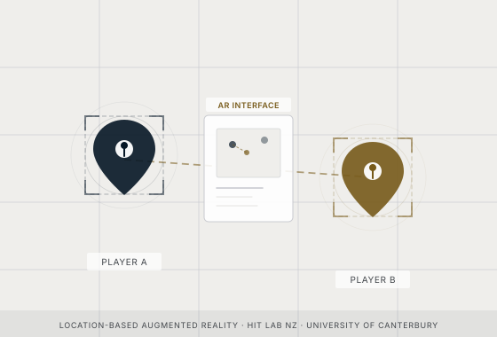
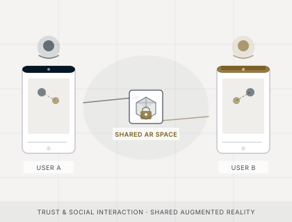
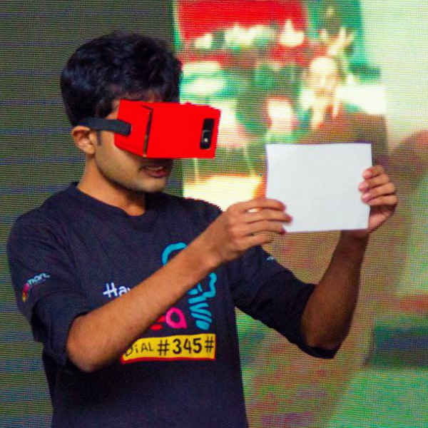

Scientific Inquiry & Publication
My research centres on location-based augmented reality — designing, building, and evaluating systems that connect remote players through shared spatial experiences. I explore how AR can extend human interaction across distance, blending physical environments with digital layers.
Active Research Projects

Location-Based AR Games Connecting Remote Players & Places
Postdoctoral research at HIT Lab NZ designing, building, and evaluating multiplayer location-based AR games. Players at different physical locations share a single augmented space through custom Unity + Niantic Lightship systems.

Trust in Shared Augmented Reality
Investigating how design choices shape trust when users exchange virtual items in shared AR environments. 36-participant study at ACM SUI 2024.
ACM DL Paper open_in_newNavitaZ VR Labs
Co-founded AR/VR startup under the MIT Global Startup Labs programme (2015–2019). Built mobile AR apps and VR web applications in Sri Lanka — Microsoft Imagine Cup Runner-Up 2015.

Multiplayer AR — Player Experience & Spatial Decision-Making
60-participant empirical study comparing AR hide-and-seek against traditional gameplay. Published in IEEE VR 2025 and Multimodal Technologies & Interaction (MDPI).
Publications
2025
-
Journal
Wickramasinghe, Y.S., Lukosch, H.K., Everett, J., & Lukosch, S. (2025). "Evaluating Spatial Decision-Making and Player Experience in a Remote Multiplayer Augmented Reality Hide-and-Seek Game."
Multimodal Technologies and Interaction, 9(8), 79. MDPI.
-
Conference
Wickramasinghe, Y.S., Lukosch, H., Everett, J., & Lukosch, S. (2025). "On the Impact of Augmented Reality Game Mechanics on the Player Experience in Remote Multiplayer Gameplay."
37th Australian Conference on Human-Computer Interaction (OzCHI '25). ACM.
-
Conference
Wickramasinghe, Y.S., Lukosch, H., Everett, J., & Lukosch, S. (2025). "Augmented Hide-And-Seek: Evaluating Spatial Decision-Making and Player Experience in a Multiplayer Location-Based Game."
2025 IEEE Conference on Virtual Reality and 3D User Interfaces (IEEE VR '25). IEEE.
-
Journal
Wickramasinghe, Y.S., Lukosch, H.K., Everett, J., & Lukosch, S. (2025). "Representing Remote Locations with Location-Based Augmented Reality Game Design."
Entertainment Computing, 53, 100932. Elsevier. 1 citation
-
Thesis
Wickramasinghe, W.A.U.Y.S. (2025). "Designing Multiplayer Location-Based Augmented Reality Games that Connect Remote Players and Places."
PhD Thesis. University of Canterbury, Christchurch, New Zealand.
2024
-
Conference
Ritter, M., Liew, K., Wickramasinghe, Y.S., & Lukosch, S. (2024). "Trustful Trading in Shared Augmented Reality."
Proceedings of the 2024 ACM Symposium on Spatial User Interaction (SUI '24). ACM.
-
Tech Report
Ritter, M., Lukosch, S., Liew, K., & Wickramasinghe, Y. (2024). "Trust and Trustworthiness While Exchanging Virtual Items in Shared Augmented Reality."
HIT Lab NZ, University of Canterbury. 1 citation
2023
-
Conference
Wickramasinghe, Y.S., Lukosch, S., & Lukosch, H. (2023). "Designing Immersive Multiplayer Location-Based Augmented Reality Games with Remotely Shared Spaces."
54th Conference of the International Simulation and Gaming Association (ISAGA 2023), pp. 204–214.
2022
-
Journal
Wickramasinghe, W.A.U.Y.S., De Saram, P.S.R.S., Liyanage, C.P., & Rangika, L.N.R. (2022). "Generating Dynamic Indoor Environments with Virtual Reality Markups."
Journal of Software Engineering & Software Testing, 6(3), 34–75. ManTech Publications.
-
Conference
Inparajah, J., & Wickramasinghe, W. (2022). "A Review on Reimagining Medical Education with Virtual Reality in Emerging Medical Disciplines."
15th International Research Conference, p. 36. 1 citation
2017
-
Conference
Wickramasinghe, W., De Saram, P., Liyanage, C.P., Rangika, L.N.R., et al. (2017). "Virtual Reality Markup Framework for Generating Interactive Indoor Environment."
2017 IEEE 3rd International Conference on Engineering Technologies and Social Sciences (ICETSS). IEEE. 4 citations
2015
-
Conference
Wickramasinghe, W., & Gunasekara, E.H.D.A. (2015). "A Mobile Application with Augmented Reality to Enhance Sinhala Learning Experience for Children."
Research Symposium of the Information Technology Research Unit (ITRU 2015). University of Moratuwa, Sri Lanka. 1 citation
Citation Metrics
Source: Google Scholar · Updated 2026
Key Collaborators & Links
Co-authoring with researchers at HIT Lab NZ, University of Moratuwa, and Niantic Aotearoa.